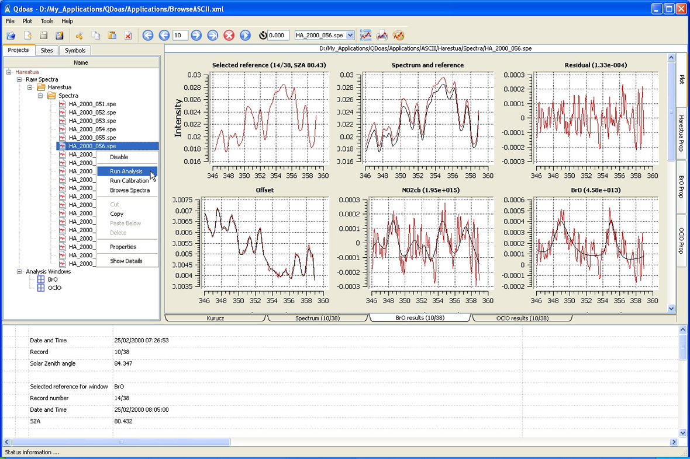
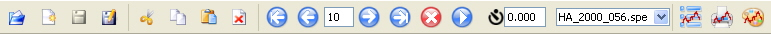

QDOAS User Interface Components

QDOAS is based on the notion of « projects ». A project is as a set of files sharing the same configuration of analysis i.e. the definition of spectral windows and the list of files to analyse with this configuration. QDOAS allows defining several projects in a session, giving users the possibility to handle several analysis configurations.
QDOAS user interface and dialog boxes are very similar to WinDOAS but now, the main components are distributed into three resizable panels with a fixed arrangement :
- the elements of the application organized in tree structures presented in three tab pages (Projects, Sites and Symbols) in the upper-left one;
- dialog boxes for the configuration of the elements of the application and the plot of spectra and results in the upper-right one; all the spectral windows are processed in one shot; right and bottom tab-switched access possible between all these pages;
- the available information on the current spectrum and analysis results are displayed in the third one.
The Menu Bar
| Files | Usual option to create a new application, open an existing one or save the current settings. QDOAS configuration files are in XML format. WinDOAS configuration files (*.wds) are not compatible with QDOAS. |
| Plot | New option to organize the plots on the page (see below), to print the plot page or to save it in a png file; |
| Tools | The convolution, ring and undersampling tools, already present in WinDOAS, are now modules completely independent from the QDOAS application but they can still be called from the user interface; |
| Help | Access to the current on-line help |
The Toolbar

The toolbar gives access to the same File and Plot options of the menu bar. It contains also buttons to move easily in the current file or to use another file in the case a multiple file selection has been performed.